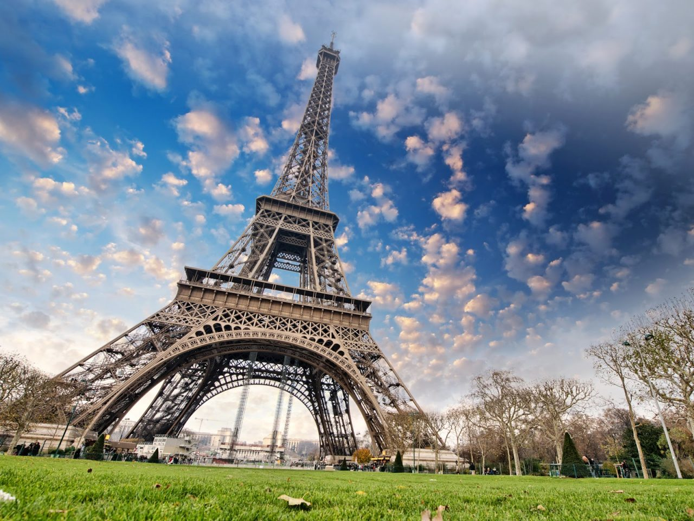

Добро пожаловать в мир путешествий!
Мы рады видеть вас на нашем сайте, посвященном путешествиям по всему миру. Здесь вы найдете вдохновение для своих следующих приключений, полезные советы и информацию о самых популярных направлениях. Независимо от того, являетесь ли вы опытным путешественником или только начинаете свое путешествие, у нас есть что-то для каждого!
Почему стоит путешествовать?
Путешествия открывают новые горизонты, позволяют познакомиться с новыми культурами и людьми, а также дают возможность отдохнуть от повседневной рутины. Вот несколько причин, почему путешествия могут обогатить вашу жизнь:
- Культурный обмен: Путешествия позволяют вам погрузиться в культуру других стран, попробовать местную кухню и узнать об их традициях.
- Личностный рост: Выход за пределы своей зоны комфорта помогает развивать уверенность в себе и адаптивность.
- Новые знакомства: Путешествия предоставляют возможность встретить людей из разных уголков мира и завести новые знакомства.
- Отдых и восстановление: Путешествия помогают отвлечься от повседневных забот и насладиться новыми впечатлениями.
Популярные направления
Исследуйте наши рекомендации по самым захватывающим местам для путешествий. Мы собрали информацию о лучших направлениях, которые стоит посетить:
- Париж, Франция - Город любви и романтики, известный своими историческими памятниками и искусством.
- Токио, Япония - Уникальное сочетание традиций и технологий, где восточная культура встречается с современными достижениями.
- Нью-Йорк, США - Город, который никогда не спит, с множеством достопримечательностей, театров и музеев.
- Рим, Италия - Город с богатой историей, где можно увидеть древние руины и насладиться итальянской кухней.
- Сидней, Австралия - Известен своими пляжами и Оперным театром, предлагает множество активностей на свежем воздухе.
Полезные советы для путешественников
Перед тем как отправиться в свое следующее приключение, ознакомьтесь с нашими полезными советами:
- Планируйте заранее: Исследуйте места, которые хотите посетить, и создайте маршрут. Заблаговременное бронирование может сэкономить вам деньги.
- Изучите культуру: Ознакомьтесь с обычаями и традициями страны, чтобы избежать неловких моментов и показать уважение к местным жителям.
- Упаковка: Подготовьте список необходимых вещей, учитывая климат и особенности места, куда вы направляетесь.
- Безопасность: Следите за своими вещами, используйте надежные способы оплаты и избегайте небезопасных районов.
- Заботьтесь о здоровье: Не забудьте взять с собой медицинскую аптечку и проверить необходимость прививок перед поездкой.
Галерея изображений
Ниже представлены некоторые из наших любимых мест для путешествий:
|  |
.jpg)
|
.jpg)
|
Свяжитесь с нами
У вас есть вопросы или предложения? Мы всегда рады помочь! Перейдите на страницу Контакты, чтобы узнать, как с нами связаться. Мы ценим ваше мнение и готовы ответить на все ваши вопросы.